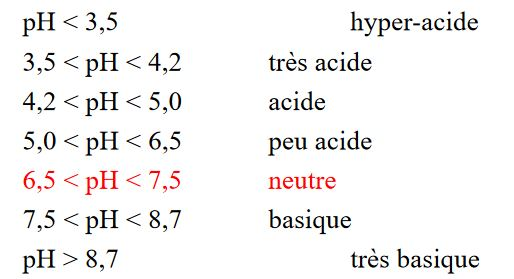

E) Le ph
Le pH (potentiel Hydrogène) permet d'évaluer la concentration de l'ion hydrogène dans une solution:
pH = -log10 [H3O+]
Dans le sol, on peut mesurer l'acidité actuelle ou l'acidité dite *potentielle :
- le pH de l'eau qui mesure l'acidité actuelle (active ou réellle) car il ne prend en compte que les H+ de la solution du sol, il n'y a pas d'échange.
- Le pH de KCL qui mesure l'acidité d'échange ou potentielle, il prend en compte les H+ de la solution du sol et ceux fixés sure le complexe;
Le pH de l'eau est plus utile dans l'étude des relation sol-plante ou pour comprendre des processus fonctionnels à court terme (ex : lixiviation des cations).
Le pH se mesure dans un rapport sol:eau (ou sol:KCL) de 1:2,5 (norme NF) ou 1:5 (norme ISO) le plus couramment.
1) Valeurs du pH eau et qualicatifs
Les valeurs possible du pH (rapport sol:eau = 1:2,5) dans les horizons de sol et qualicatifs correspondant selon le Référentiel Pédologique (2008):

La majorité des sols des régions tempérées ont de pH de l'eau compris entre 4 et 7,5.
2) Le rôle et importance du pH
L'optimum de pH au plan agronomique pour l'assimilabilité des éléments fertilisants et des oligo-éléments :
6,5 < pH < 7,5 (en sols non calcaire)
Un seuil à connaître : pHeau < 5, présence de Al3+ (risque de toxicité aluminique pour les cultures de blé, orge, maïs et luzerne). La mobilité est disponibilité des éléments traces : rétention du cadnium par phase solide croït exponentiellement avec des pH croissants (très forte si pH > 6,5)
F) Teneur en matière organique
La teneur en MO peut -être estimée par simple perte au feu à 550 °C. Le plus souvent, elle est estimée par la mesure de ses éléments majeurs (analyse élémentaire au CHN) :
- le carbone (organique) : C;
- l'azote (majoritairement sous forme organique dans les sols à plus de 95%) : N
La teneur en C organique renseigne sur la teneur en MO globale qui joue un rôle majeure dans le fonctionnement des écosystèmes :
- Rôle dans l'absorption et la rétention de l'eau, des cations échangeables, du phosphore, de l'azote, des éléments traces métalliques, des pesticides, ...
- Rôle positif sur la stabilité strcuturale des horizons de surface (lutte contre l'érosion si C org > 1,5 %; habitat pour la pédofaune);
- Rôle biologique vis à vis de la pédofaune et des microorganismes (ressource)
- Rôle dans le cycle biogéochimique du C : le sol contient 3 x plus de C que la biomasse végétale terrestre (importance stockage/déstockage du C organique des sols).
Les tolérances pour les teneurs en C organique permettant de définir un horizon ou un matériau pédologique selon le Réferentiel Pédologique (2008) :
- Horizon minéral : < 0,1 g/100g
- Horizon organo-minéral : de 0,1 g/100g à 8 +/- 2 g/100g
- Horizon hémiorganique : de 8 +/- 2 g/ 100g à 30 +/- 5 g/100g
- Horizon holorganique : > 30 +/- 5 g/100g
1) Teneur en Corganique et Ntotal de sols
Les ordres de grandeur pour les sols minéraux (% du sol sec) :
- Corg : 0,2 à 10 % (sols non calcaires);
- Ntot : 0,1 à 0,5 %
Quelques teneurs en Haute Normandie pour des horizons organo-minéraux de surface (horizon A) en % du sol sec :
- Rendzine forestière sur craie : MO = 17,3 %; Corg = 10,18 %, N = 0,77 M et C/N = 13
- Sol lessivé sur limon : Mo = 7,4 %; Corg = 4,3 %; N = 0,28 % et C/N = 15
- Podzol sur limon sableux à silex : MO = 25,5 %; Corg = 14,8 %; N = 0,32 % et C/N = 47
2) Importance, rôle et formes de l'azote dans le sol
L'azote se présente sous deux formes dans le sol :
- l'azote organique (plus de 95 % du total), rencontré dans des protéines (35-50 %), des acides nucléiques (3-10 %), des amino-sucres (5-10 %)
- l'azote minéral, formé de nitrates (N-NO3-), de nitrites (N-NO2-) et d'ammonium (N-NH4+).
Si les formes minérales sont à un niveau relativement faible dans le sol, ce sont elles qui sont absorbées par les plantes (notion de biodisponibilité).
NH
NO3 + et NO2 - sont les plus solbules et plus présents dans les sols basiques.
La disponibilité et la quantité relative de ces ions variant avec la saison et le climat. Le cycle biogéochimique de l'azote est aujourd'hui bien documenté.
G) Teneur en éléments minéraux
La teneur en éléments minéraux est la capacité d'échange cationique et taux de saturation.
1) Les échanges ioniques
Les argiles, l'humus et le complexe argilo-humique possèdent la capacité de retenir à leur surface des ions provenant de la solution du sol, c'est le pouvoir absorbant du sol.
Les ions ainsi fixés sur le complexe sont échangeables. C'est le mécanisme d'échange des cations entre le complexe et la solution du sol.
2) La capacité d'échange et taux de saturation
La capacité d'échange cationique totale (T) est la quantité maximale de cations qu'un poids déterminé de sol est capable de retenir.
La somme des bases échangeables (S) est la quantité de cations métalliques échangeables fixés sur le complexe à un moment donnée.
La différence (T-S) représente l'acidité d'échange (AE) c'est à dire la quantité de H+ et de Al3+ fixés.
Le taux de saturation (V) est le rapport : V = S/T x100
- Sols calcaires, riches en calcaire actif : V = 80 - 90 %
- Sols formés sur RM sableuse, gréseuse ou granitique, pauvres en bases et filtrantes : V < 20 %
3) Le mode d'expression de la CEC
La CEC (ou T) est traditionnellement exprimée en milliéquivalents pour 100g de terre fine : mé/100g. Le milliéquivalent est un unité spécialement utilisée pour traiter de la CEC et des ions échangeables. Il vaut un millième d'équivalent-gramme.
1 équivalent-gramme = 1 atome-gramme ou 1 molécule-gramme ou 1 ion-gramme divisé par la valence.
Selon les normes SI, il vaut mieux désormais employer la mole qui définit la même grandeur que l'équivalent
1 mé/100g = 1 cmol+/kg
4) Qualicatifs liés au taux de saturation :
- S/T compris entre 95-100 % : saturé (ou resaturé)
- S/T compris entre 80-95 % : subsaturé (ou resaturé)
- S/T compris entre 50-80 % : mésosaturé
- S/T compris entre 20-50 % : oligosaturé
- S/T compris entre 0-20 % : désaturé
5) Le calcium et la répartition des plantes
Richesse en Ca 2+ = facteur prépondérant dans l'écologie des végétaux, opposition espèces calcifuges et calcicoles. La présence de calcaire ou d'un complexe saturé en calcium.
- Structure très stable favorable à le perméabilité et à l'aération;
- pH neutre ou basique, compris entre 7 et 8;
- teneur en éléments minéraux assimilables faible ou élevées selon leur solubilité en milieu basique (solubilité Fe, Al, Mn, Zn, Cu et Br réduite par rapport aux sols siliceux);
- minéralisation Iaire élevée de microorgansimes neutro-basiphiles
6) Espèces calcifuges
Les espèces qui ne peuvent tolérer une concentration trop élevée en calcium dans la solution du sol. L'excès de calcium inhibe, pour certaines espèces, la nutrition en autres éléments, tels que le fer et la manganèse ce qui entraîne le phénomène de chlorose. Il est possible de faire le distinction entre deux groupes.
Les espèces qui fuient la présence du calcaire actif dans le sol, mais suppportent un degré de saturation élevé de la capacité en ions calcium. Les espèces acidiphiles qui redoutent une trop grande saturation en ions calcium du complexe absorbant; il ne peuvent vivre qu'à un pH voisin de 5 ou plus faible.
7) Espèces calcicoles
Les espèces calcicoles ne constituent pas un groupe homogène, leur présence sur sols calcaires est liée, bien souvent à certaines propriétés physiques inhérentes à ce type de sol, ce sont :
- des espèces neutrophiles exigeant un complexe absorbant presque saturé (Cornouiller sanguin, Fusain)
- des espèces thermophiles sur les sols roxheux bien exposés (Chêne pubescent, Buis)
- des espèces xérophiles sur calcaires fissurés peu profond (Graminées des pelouses calcaires)
Aucune de ces espèces n'exige de manière stricte la présence de calcaire actif dans le sol